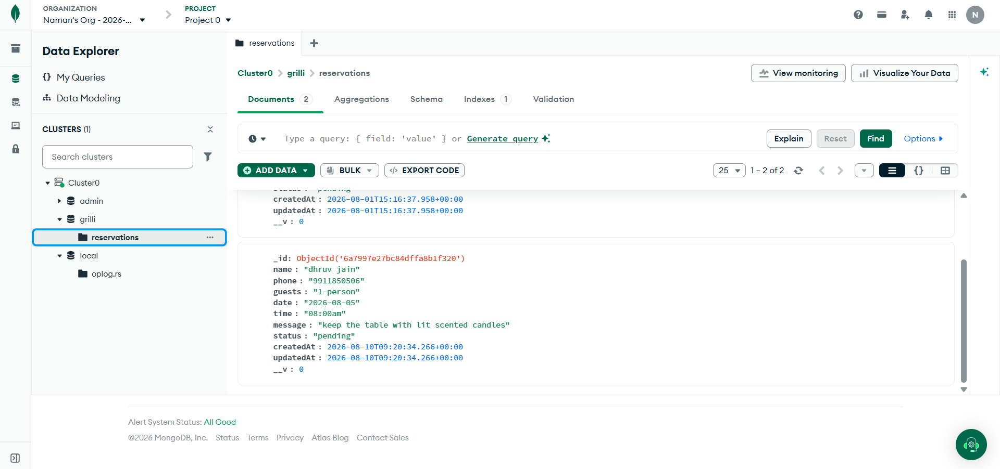
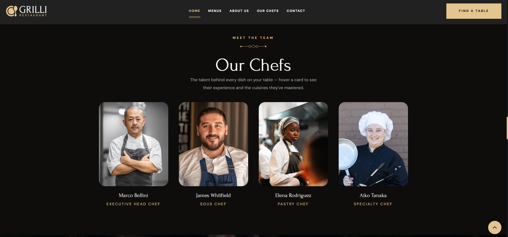
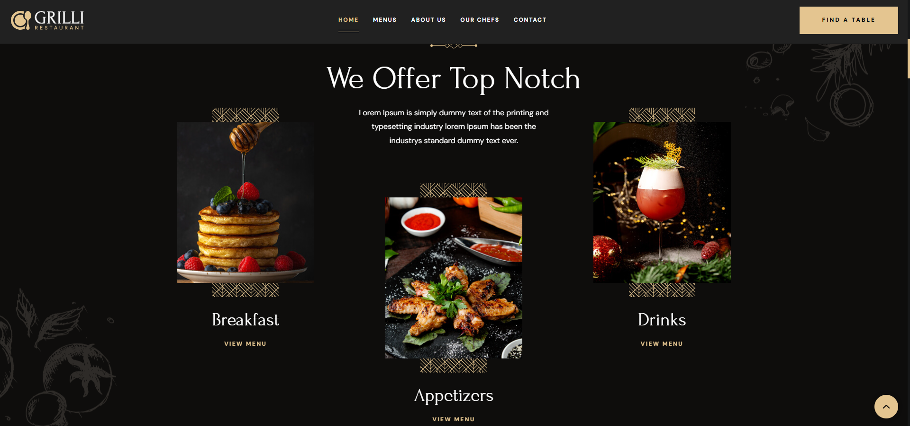
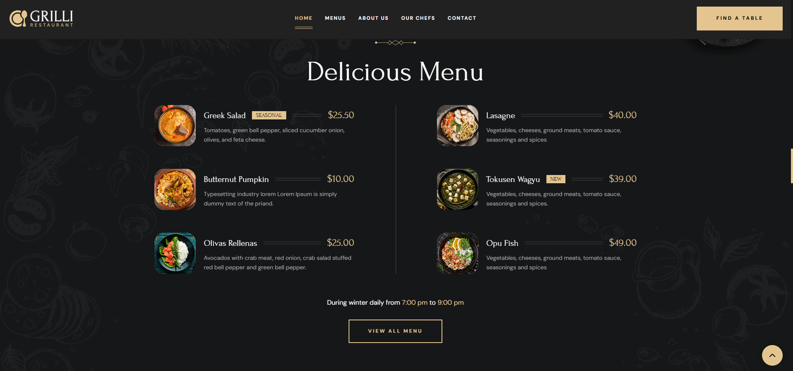
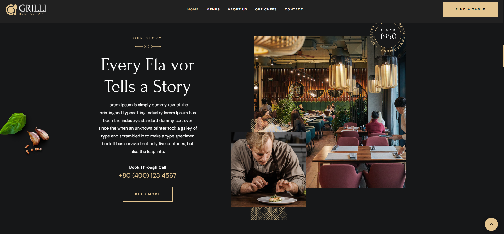
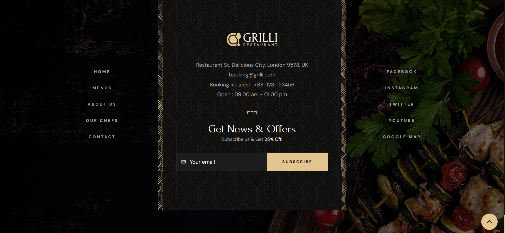

Site & Database Gallery
Core Application Interfaces
Luxury restaurant hero interface featuring reservation quick-action triggers and royal dining aesthetics.

Asynchronous booking form with guest, date, time selection and live client-side validation.

Real-time reservation document persisted in MongoDB Atlas with ISO timestamps and schema sanitization.

Custom-built 'Our Chefs' section with responsive 4-card CSS hover overlays and culinary bios.

Culinary service showcase displaying breakfast, lunch, and dinner signature dining experiences.

Interactive seasonal dish catalog with pricing, dietary callouts, and chef recommendations.

Brand heritage and culinary narrative section detailing 15 years of Michelin-grade hospitality.

Responsive brand footer with working reservation anchor links, operational hours, and location.